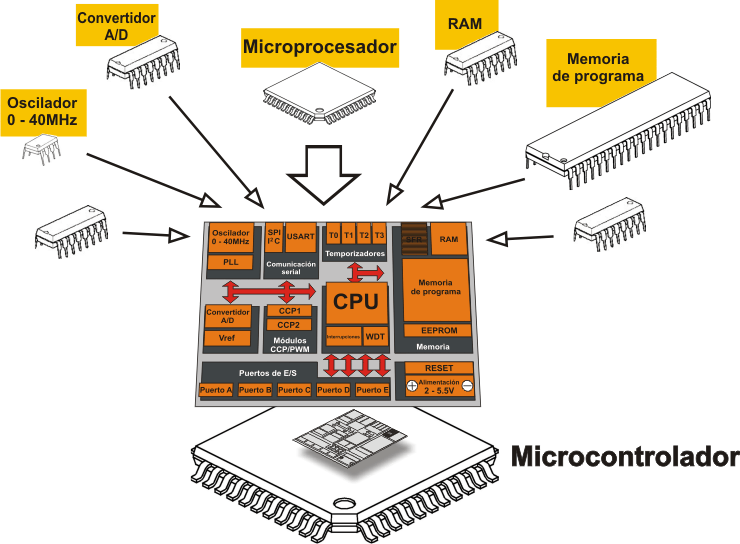

2.1 Organización de Procesador
La Unidad de Procesamiento (CPU) controla el funcionamiento del computador y lleva a cabo sus funciones de procesamiento de datos. Frecuentemente se le llama procesador.
Un procesador, incluye tanto registros visibles por el usuario como registros de control/estado. Los registros visibles por el usuario pueden ser de uso general o tener una utilidad especial, mientras que los registros de control y estado se usan para controlar el funcionamiento del procesador, un claro ejemplo es el contador de programa.
Lleva a cabo una gran variedad de:
Cálculos
Comparaciones numéricas
Transferencias de datos como respuesta a las peticiones de los programas que están siendo ejecutados en memoria.
La CPU controla las operaciones básicas del ordenador enviando y recibiendo señales de control, direcciones de memoria y datos de un lugar a otro de la computadora a través de un grupo de canales llamados BUS.
A continuación se muestra cómo se organiza un procesador, para esto se tiene que considerar los siguientes requisitos:
Captar instrucciones: el procesador lee una instrucción de memoria (registro, cache o memoria principal).
Interpretar instrucción: la instrucción se codifica para determinar qué acción es necesario.
Captar datos: la ejecución de una instrucción puede exigir leer datos de memoria o de un módulo de E/S.
Procesar datos: la ejecución de una instrucción puede exigir llevar a cabo alguna operación aritmética o lógica con los datos.
Escribir datos: los resultados de una ejecución pueden exigir escribir datos en la memoria o en el módulo de E/S.
Para hacer estas cosas, el procesador necesita almacenar instrucciones y datos temporalmente mientras una instrucción está ejecutándose, en otras palabras el procesador necesita una pequeña memoria interna, también llamados registros.
